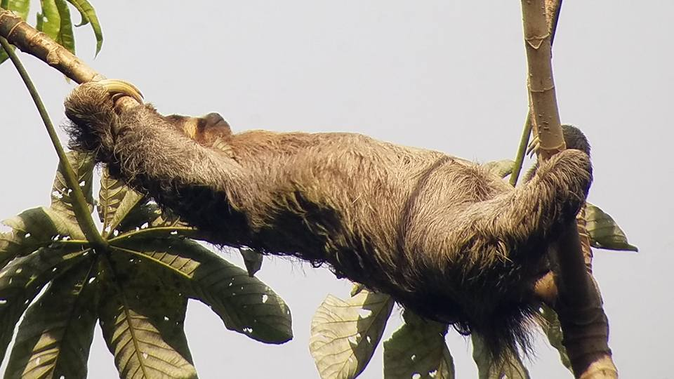

All About Sloths!

Photo Credit: Britt Flowers
Photo taken at Manuel Antonio National Park in Costa Rica!
*** Sloth Facts ***
- Sloths are tropical mammals that live in Central and South America.
- They use their long claws to hang onto branches while they feast on leaves.
- Their long claws — 3 to 4 inches, make walking on the ground difficult, so they spend most of their time in the tall trees they call home.
- There are two categories of sloths. The two-toed sloth is slightly bigger than the three-toed sloth.
- A sloth's life revolves around sleeping and eating in their tree homes. The only times these mammals leave their tree is to use the bathroom and to take a swim.
- Sloths in captivity sleep from 15 to 20 hours per day. Sloths in the wild, though, sleep about as much as humans.
- Sloths are excellent swimmers. To get to the rivers for a swim, sloths will drop themselves off of branches into the water.
Reasons Why I Love Sloths!
- They are always chill and happy.
- They have the cutest face.
- They are extra cute as babies.
- They look so cuddly
- They are always hanging out in trees.
- They aren't afraid of heights.
- They make funny memes.